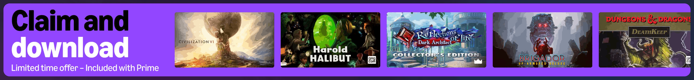

|
Note: To do what I'm talking about you do need an Amazon Prime subscription. (So it's not really "free" but a lot of people do already have a Prime subscription) Just learned this recently but Amazon has a gaming service called "Luna".(Sounds like a transfem's name lol) Going to their page and scrolling all the way down you'll see a banner advertising that signing up gives you free games. Clicking on it you get sent to /claims/home. If you scroll down it's just them trying to get you to buy stuff through I assume their launcher.(No idea I literally only come here for free GOG games) Instead of doing that, click on the "Claim Games" button. From there any game with the "GOG" logo in the bottom right corner is what you want. You can click the "Claim game" button, click "Get game", then it'll give you a code to use on GOG.  While there are other games for other platforms you can claim, I don't really care about them. GOG gives you permanent ownership of your games, not just licenses. You also don't need to use a launcher to install games, instead you just download and run the game's installer and it's installed and ready to play forever. There aren't the greatest games ever to claim here but they do put new ones on regularly and there are some pretty neat stuff. So far I've gotten Fallout, Fallout 2, four different D&D games, and Elderborn. |